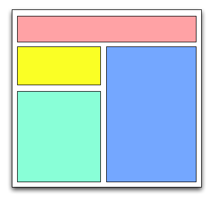

Silvia Pfeiffer and Alice Boxhall
Silvia Pfeiffer and Alice Boxhall
Screen readers and magnifiers allow the user to explore both static text and interactive elements.
Here's an example web form to demonstrate:
|  |
<header> </header> <nav> </nav> <article> </article> <aside> </aside> |
The plain in rain stays mainly in the Spain
<blockquote>
The <span>plain</span><span>in</span><span>rain</span>
<span>stays mainly in the </span><span>Spain</span>
</blockquote>
#plain {
position: relative;
left: 430px;
}
#rain {
position: relative;
left: -100px;
}
<nav>, <header>, and
<h1> are useful here.
Header |
||||
SidebarColourless green ideas sleep furiously. |
| |||
<span onclick="">... <div onclick="">... |
⇒
|
<a href="">... <button onclick="">... |
<div>Click on this button:
<div class="custombutton" onclick="alert('sent!')">Send</div></div>
<input type="text" id="user"> <input type="password" id="password"> <input type="checkbox" id="remember"> <br> <span class="label_left">User Name</span> <span class="label_middle">PIN</span> <span class="label_right">Remember me</span> <br><button>Send</button>
<input type="text" id="user_correct"> <input type="password" id="password_correct"> <input type="checkbox" id="remember_correct"> <br> <label for="user_correct" class="label_left"> User Name</label> <label for="password_correct" class="label_middle"> PIN</label> <label for="remember_correct" class="label_right">Remember me
</label> <br><button>Send</button>
<script>
function confirm() {
$('ink_dialog').style.display = 'block';
$('dialog_live').style.backgroundColor = 'gray';
}
function closeDialog() {
$('ink_dialog').style.display = 'none';
$('dialog_live').style.backgroundColor = 'white';
}
</script>
<div id="ink_dialog" class="dialog">
<p>Are you sure you can afford it?</p>
<button id="ok" onclick="closeDialog()">OK</button>
<button id="cancel" onclick="closeDialog()">Cancel</button>
</div>
<button id="confirm" onclick="confirm()">
Buy More Printer Ink
</button>
<script>
function confirm_correct() {
$('ink_dialog_correct').style.display = 'block';
$('ok_correct').focus();
$('dialog_correct').style.backgroundColor = 'gray';
}
function closeDialog_correct() {
$('ink_dialog_correct').style.display = 'none';
$('confirm_correct').focus();
$('dialog_correct').style.backgroundColor = 'white';
}
</script>
<div id="ink_dialog_correct" class="dialog" role="dialog">
<p>Are you sure you can afford it?</p>
<button id="ok_correct" onclick="closeDialog_correct()">OK</button>
<button id="cancel_correct" onclick="closeDialog_correct()">Cancel</button>
</div>
<button id="confirm_correct" onclick="confirm_correct()">
Buy More Printer Ink
</button>
<div> custom controls. Now what?
<div title="Speed">
<span>Normal</span>
</div>
<div id="menu" style="display: none;">
<ul>
<li id="id-Double" data-value="Double">Double Speed</li>
<li id="id-Normal" data-value="Normal">Normal Speed</li>
<li id="id-Half" data-value="Half">Half Speed</li>
</ul>
</div>
<div class="button" id="button" title="Speed">
<span>Normal</span>
</div>
<div id="menu" style="display: none;">
<ul>
<li id="id-Double" data-value="Double">Double Speed</li>
<li id="id-Normal" data-value="Normal">Normal Speed</li>
<li id="id-Half" data-value="Half">Half Speed</li>
</ul>
</div>
<style>
li:hover {
background: #691213;
}
</style>
<script>
var button = document.getElementById("button");
var menu = document.getElementById("menu");
var items = menu.getElementsByTagName("li");
function showMenu(evt) {
evt.stopPropagation();
menu.style.display = 'block';
}
function hideMenu(evt) {
evt.stopPropagation();
menu.style.display = 'none';
}
function changeButtonText(newText) {
button.childNodes[1].innerHTML = newText;
}
function selectItem(evt) {
changeButtonText(evt.target.getAttribute('data-value'));
}
document.addEventListener('click', hideMenu, false);
button.addEventListener('click', showMenu, false);
for (var i = 0; i < items.length; i++) {
items[i].addEventListener('click', selectItem, false);
}
</script>
tabindex:
<!-- Natural tab order --> <div onclick="" tabindex="0">Clicky 1</div> <!-- Custom tab order --> <div onclick="" tabindex="7">Clicky 2</div> <!-- Focusable but not in tab order. This is useful when hiding focusable controls from sighted and keyboard-only users --> <div onclick="" tabindex="-1">Clicky 3</div>
element.focus()Apply focus to button: tabindex=0
<div class="button" id="button" title="Speed" tabindex="0">
Allow focus on menu: tabindex=-1
<div id="menu" style="display: none;" tabindex="-1">
Manage focus hand-over with focus()
function showMenu(evt): menu.focus(); function hideMenu(evt): button.focus();
The Pull-Up div control is most like a button:
button.addEventListener('keydown', handleButtonKeys, false);
function handleButtonKeys(evt) {
evt.stopPropagation();
var key = evt.keyCode;
switch(key) {
case (13): /* ENTER */
case (32): /* SPACE */
var buttonText = button.childNodes[1].innerHTML;
var actItem = document.getElementById("id-"+ buttonText);
setSelected(actItem);
showMenu(evt);
default:
}
}
function setSelected(elem) {
elem.setAttribute('selected', true);
}
The Pull-Up menu control is most like a list:
<li id="id-Normal" data-value="Normal" selected="true"></li>
function getPrevItem(index), function getNextItem(index)
menu.addEventListener('keydown', handleMenuKeys, false);
<style>
*[selected] {
background: #691213;
}
</style>
<script>
function getSelected() {
for (var i=0; i < items.length; i++) {
if (items[i].getAttribute('selected')) {
return i;
}
}
return 0;
}
function setSelected(elem) {
var curSelected = getSelected();
items[curSelected].removeAttribute('selected');
elem.setAttribute('selected', true);
}
function hideMenu(evt) {
evt.stopPropagation();
menu.style.display = 'none';
items[getSelected()].removeAttribute('selected');
button.focus();
}
menu.addEventListener('keydown', handleMenuKeys, false);
function handleMenuKeys(evt) {
evt.stopPropagation();
var key = evt.keyCode;
switch(key) {
case (38): /* UP */
setSelected(items[getPrevItem(getSelected())]);
break;
case (40): /* DOWN */
setSelected(items[getNextItem(getSelected())]);
break;
case (13): /* ENTER */
case (32): /* SPACE */
changeButtonText(items[getSelected()].innerHTML);
hideMenu(evt);
break;
case (27): /* ESC */
hideMenu(evt);
break;
default:
}
}
function getPrevItem(index) {
var prev = index - 1;
if (prev < 0) {
prev = items.length - 1;
}
return prev;
}
function getNextItem(index) {
var next = index + 1;
if (next == items.length) {
next = 0;
}
return next;
}
</script>
role attribute to indicate that a generic tag is playing the role of a standard
widget like a button.
<div tabindex="0" role="button">Send</div>
<div tabindex="0" role="menuitem">Paste</div>
<section role="search">Search this Site ...</section>
<div tabindex="0" role="checkbox" aria-checked="true">
aria-live identifies dynamic content on a page.
aria-live is added to elements that will be updated and describes the type of
updates the element receives.
<div title="Speed" class="button" id="button" tabindex="0" role="button" aria-haspopup ="true" aria-label="Normal Speed">
<div class="menu" id="menu" style="display: none;" tabindex="-1" role="menu" aria-activedescendant="id-Normal">
<li id="id-Double" role="menuitem" data-value="Double">Double
<div title="Speed" class="button" id="button" tabindex="0" role="button" aria-haspopup ="true" aria-label="Normal Speed">
<span>Normal</span>
</div>
<div class="menu" id="menu" style="display: none;" tabindex="-1" role="menu" aria-activedescendant="id-Normal">
<ul>
<li id="id-Double" role="menuitem" data-value="Double">Double Speed</li>
<li id="id-Normal" role="menuitem" data-value="Normal" selected="true">Normal Speed</li>
<li id="id-Half" role="menuitem" data-value="Half">Half Speed</li>
</ul>
</div>
<script>
function changeButtonText(newText) {
button.childNodes[1].innerHTML = newText;
button.setAttribute('aria-label', newText + " Speed");
}
function setSelected(elem) {
var curSelected = getSelected();
items[curSelected].removeAttribute('selected');
elem.setAttribute('selected', true);
menu.setAttribute('aria-activedescendant', elem.id);
}
</script>